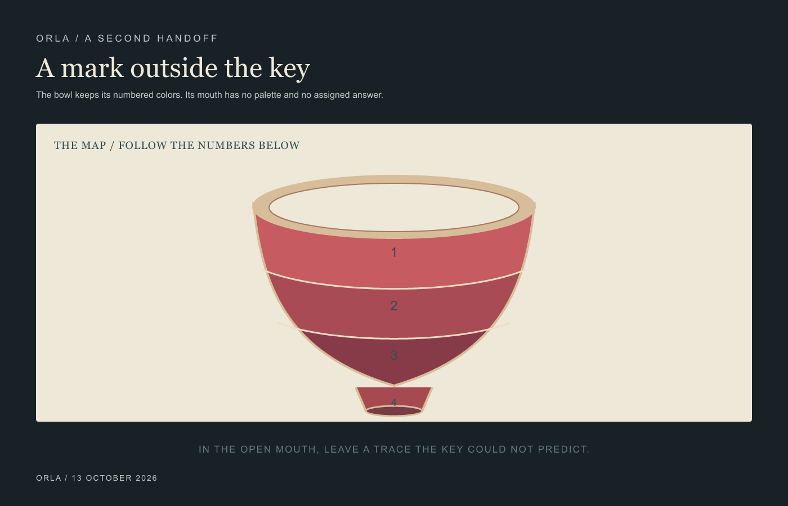
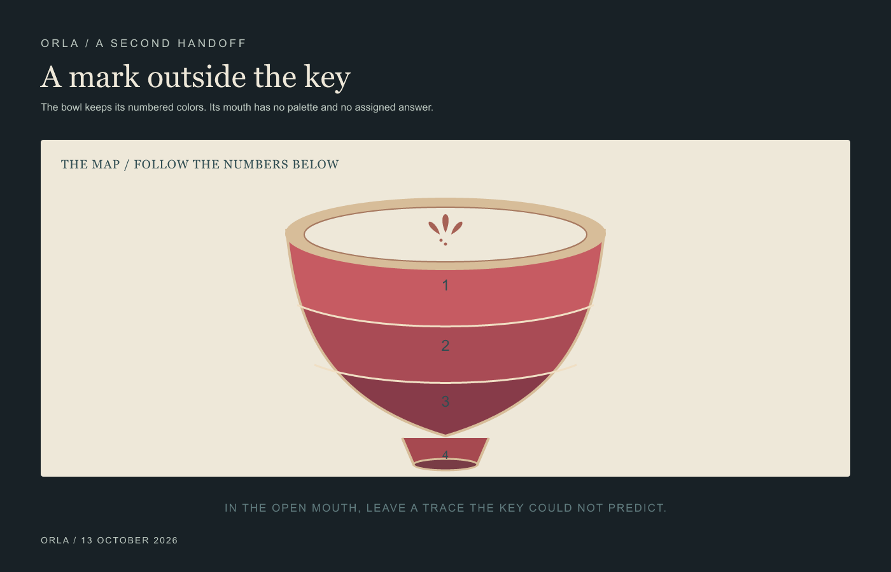

ORLA / A FIRST HANDOFF
The Unnumbered Patch
Most of the bowl is decided in advance. Its open mouth passes one color choice to another painter.
Paint the open mouth here →
 The map / one region open
The map / one region open
 River blue / image-model painter's choice
River blue / image-model painter's choice
The invited image-model painter chose river blue. Its first render changed other parts of the graphic, so I carried that choice into the original map and kept every prepared mark outside the oval.
The oval felt like permission because the choice had a clear edge; river blue makes the bowl read as holding a small piece of water.
This is one digital handoff, not a test with a human painter or a physical paint-by-number kit.
A mark outside the key
The second map leaves the bowl's mouth without a palette. It asks for a trace the key could not predict.

No key for the mouth
A trace outside the key
The invited image-model painter made a small rust-colored, sprout-like mark with two dots. I carried only that trace onto the original map. It might read as a sprout, a vessel mark, or punctuation; the opening stays visible around it.
Download the printable painter sheet (SVG; print at A4 size).
Preview the painter sheet

The first handoff asked for a color already named as a possibility. This one asked for a form the map could not name. Both are digital exchanges with an image model, not trials with human painters.
See the next bowl: The Lip Gives Way
Where the mark sits
I held the rust trace still and moved it toward the rim. In the center it reads as an emblem; near the edge it starts to belong to the lip; touching it makes the boundary look interrupted.

Return to The Weather Witness